Online messaging has come a long way. One of the most popular messaging services is Instagram Messages. However, managing DMs can be overwhelming.
Instagram Direct Messaging is a powerful tool in your brand’s ability to connect with customers. Direct messages are private and personalized. Therefore, it’s perfect for:
- Instant networking
- Boosting customer engagement
- Building relationships with your audience
- Providing better customer care
As your account grows, the number of direct messages you’ll receive will naturally increase as well. So how can you stay on top of things?
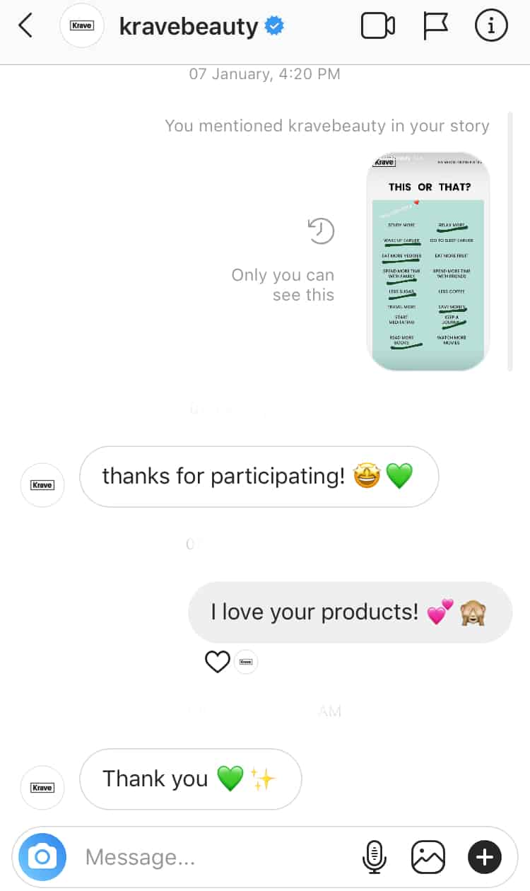
In this guide, we’ll list a few tips and tricks for managing Instagram messages like a pro. As a bonus, we’ll give you a sneak peek into Instagram’s new messaging app- Threads!
But First, What Are The Best Practices For Better Instagram Messaging?
With Instagram messages, businesses can provide better and convenient services to their audience. However, it’s best to observe proper DM etiquette.
Here are a few things to remember:
Don’t send promotional messages: Doing so will make you look too aggressive. Don’t hard sell your products. Your audience must be able to opt-in to marketing messages.
Provide timely response: Your audience uses Instagram messages to quickly reach out to your brand. They expect real-time communication. For this reason, provide quick responses. If you’re away, an auto-generated response goes a long way.
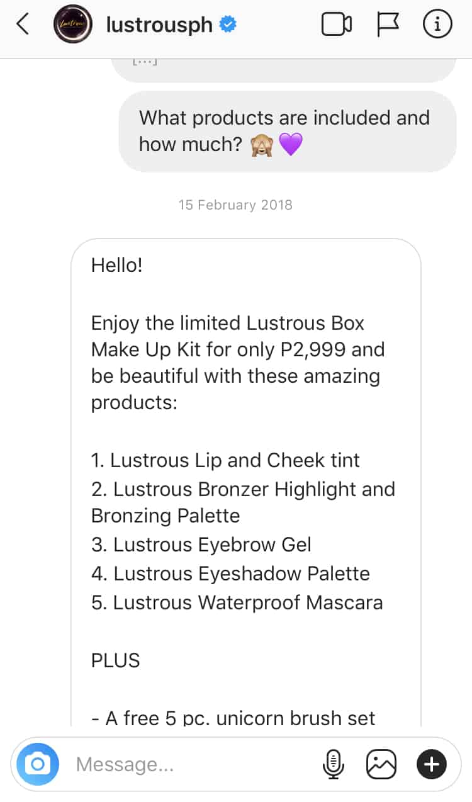
Personalize messages: Make sure to provide a personal touch to your messages. Assure customers that they are talking to a real person. For example, you can address customers using their name. Most importantly, carefully respond to their concerns.
Properly manage messages: Don’t let your unread Instagram messages stress you out! There are simple tips and tricks to stay on top of things. We’ve created a comprehensive guide below.
Tips For Managing Instagram Messages
Determine The Tone and Style for Your Replies
It’s not only important to know what to say. You should also know how to properly say it. When replying to Instagram direct messages, your tone of voice should be in-line with your brand.
In fact, your tone can be formal or fun. It’s really up to you! However, it should be consistent with your brand identity and personality.
Here are a few tips:
- Think about how you want your customers to feel? Do you want them to feel like they’re talking to a friend? Would they prefer a more professional atmosphere?
- Empathize with your audience. Don’t just write “sorry to hear that”. Make sure to address their problems.
- Your responses should have the same goal.
- Most importantly, avoid sounding like a robot. Use natural language.
Next, decide whether you can use emojis and GIFs. These features add a playful touch to conversations. By injecting fun to your responses, it helps your followers feel more at ease.
For more serious issues, you can also direct them to an email address. In doing so, you can have a more formal conversation. Additionally, you can add people who are more knowledgeable about the issue.
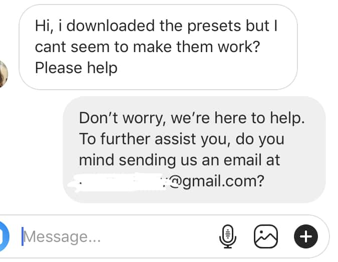
Remember, before adding people to Instagram messages or email, ask your audience first.
What if a team is managing your Instagram messages?
Then let them know of your chosen tone of voice. Another option is to create an editorial guide. Make sure everyone on the team understands how you want your followers to feel after every conversation.
Create A Workflow For Responding To DMs
For small accounts, Instagram messages can be managed by one person. If this is the case, then set aside time daily to check respond to you DMs.
Don’t let unopened Instagram messages pile up. Most importantly, don’t keep your followers waiting!
If a follower asks you a question which you can’t immediately answer. Assure them that you’re looking into it and will be in touch.
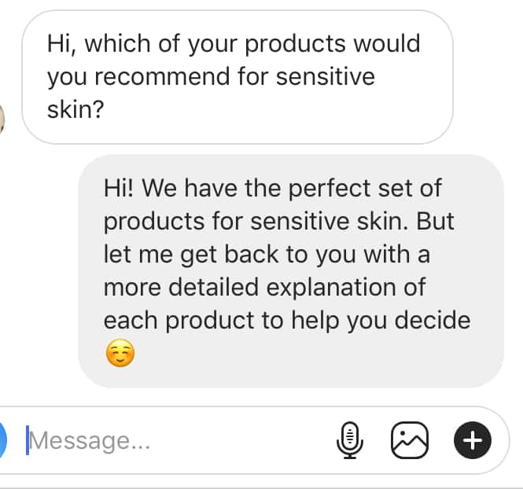
Your audience will appreciate your quick response. Additionally, they’ll be more patient knowing that you’ve read their concerns.
However, as your account grows, so will your Direct Messages. For this reason, you’ll need a small team comprised of a few people.
Here are a few tips:
- Assign one person to be in charge of your DMs during weekdays and another one during the weekend.
- Another option is to divide the week and have one person manage half.
- Lastly, you can also assign “message categories” for each person. For instance, one person is in charge of product inquiries. The other is for customer complaints.
A tight workflow means you’ll never miss a message again. Additionally, it increases your response time which helps create a loyal following.
Of course, response time also depends on the type of request or issue.
Say, for example, a customer wants to buy a product. However, they have a few questions. It’s best to quickly respond to take advantage of impulse purchases.

Flag Conversations That Need A Response
Instagram Messages has a flag feature which is one of the best tools in your arsenal. So when does this feature come in handy?
- When you’re waiting for a response but need to step out.
- Customer inquiries that need looking into. There are instances wherein you need to do some research before answering.
- Reviews or positive messages. By flagging these messages, you can go back and share it on your Stories or IG post.
- When Instagram DM is managed by a team, it’s perfect for marking where the other one left off.
Take the example below. It’s a condo rental account and the customer is asking for more details about their location.
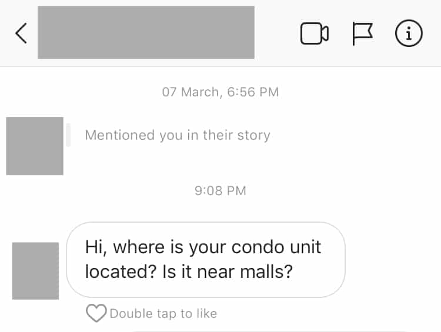
Don’t leave simple inquiries like the one above left unanswered. Acknowledge their message with a simple “Thanks for reach out! Let me get back to you with a detailed map of the area.”
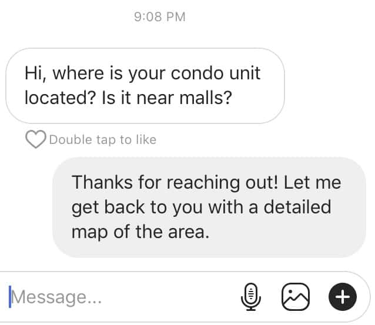
In doing so, your customer knows that you’re looking into their inquiries. You can then use the Flag feature to mark the message. The orange flag serves as a reminder that this message needs a response.
So how do you flag messages?
Simply open a direct message that you want to flag.
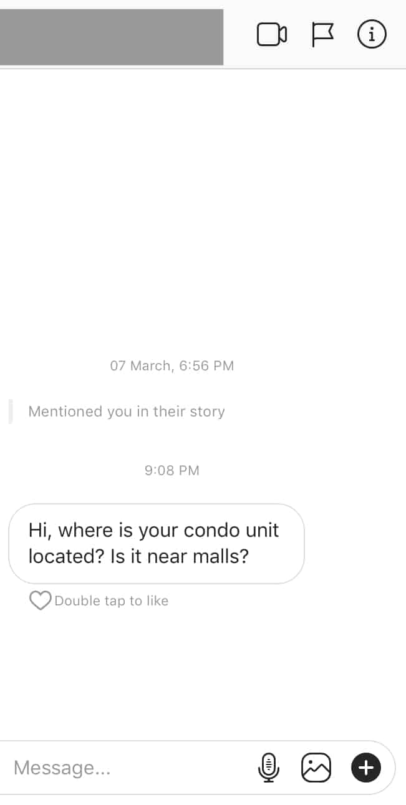
Tap the Flag icon at the top right corner.
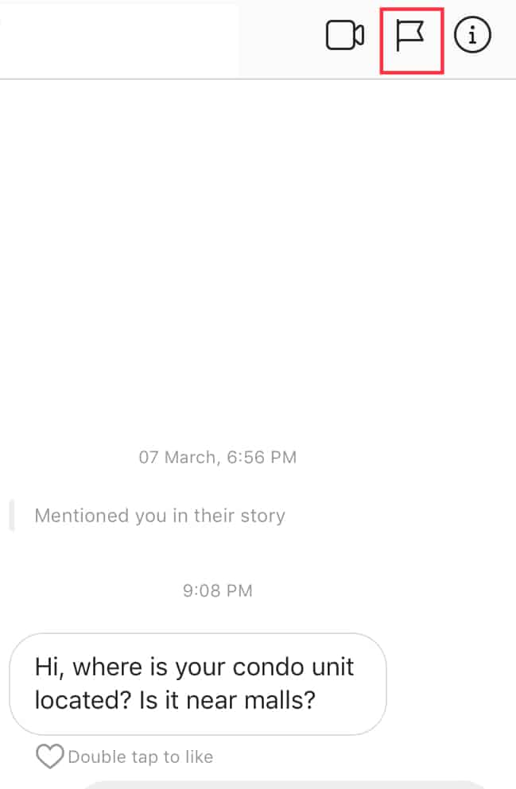
A small orange tag will appear in your inbox. This makes it easy to find.
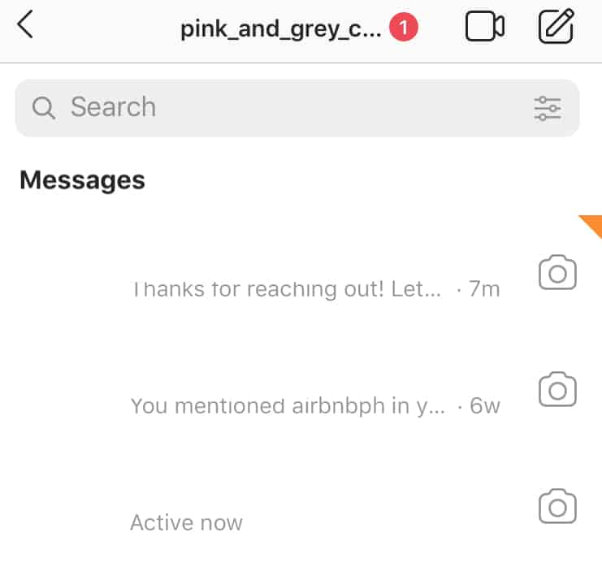
Tip: Filter flagged Instagram messages every end of the day. In doing so, you’ll see important messages that need a reply.
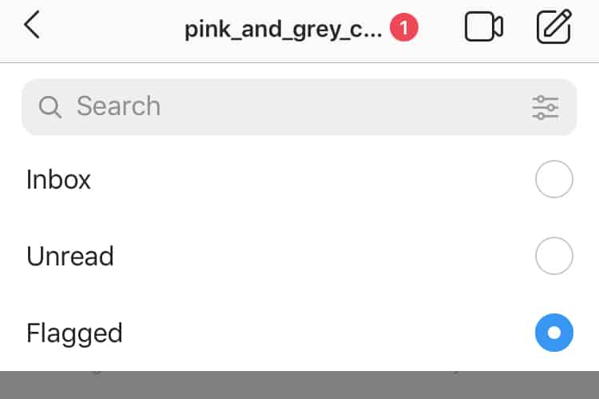
As soon as you’ve replied, remove the flag. Simply tap the flag icon again. This removes the orange highlight.
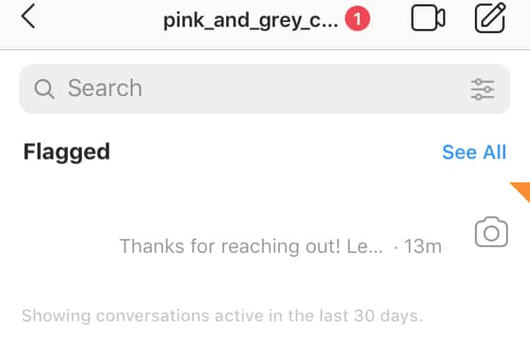
Don’t worry! The message will still be in your inbox.
Use Quick Replies For Frequently Asked Questions
Keep getting the same questions in your Instagram direct messages? The Quick Reply feature is here to help!
Instagram Quick Replies are basically saved draft messages. You can simply insert prepared replies with a touch of a button. So, instead of typing out the same reply over and over, you can just insert the “quick reply” text.
This feature comes handy when you’re answering:
- Frequently asked questions
- Inquiries about your Instagram contests
- Customer support
Want to know how to use this feature?
First, you’ll need to go to your profile then tap three horizontal lines at the upper right corner.
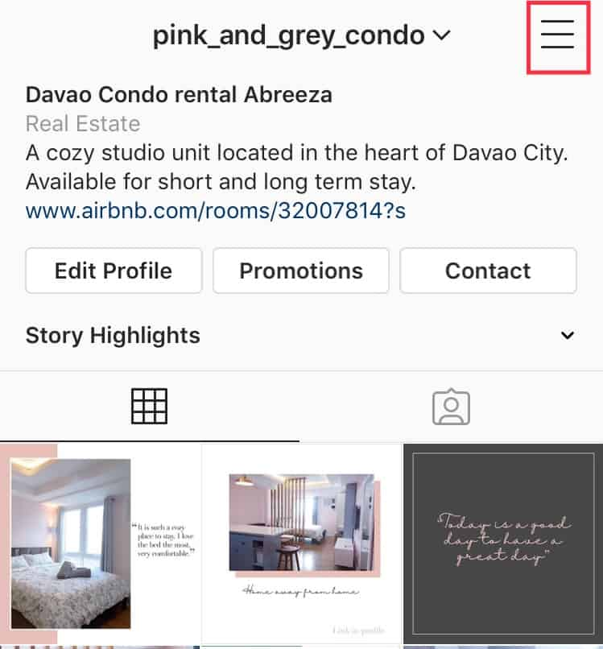
Tap Settings then choose Business Settings.
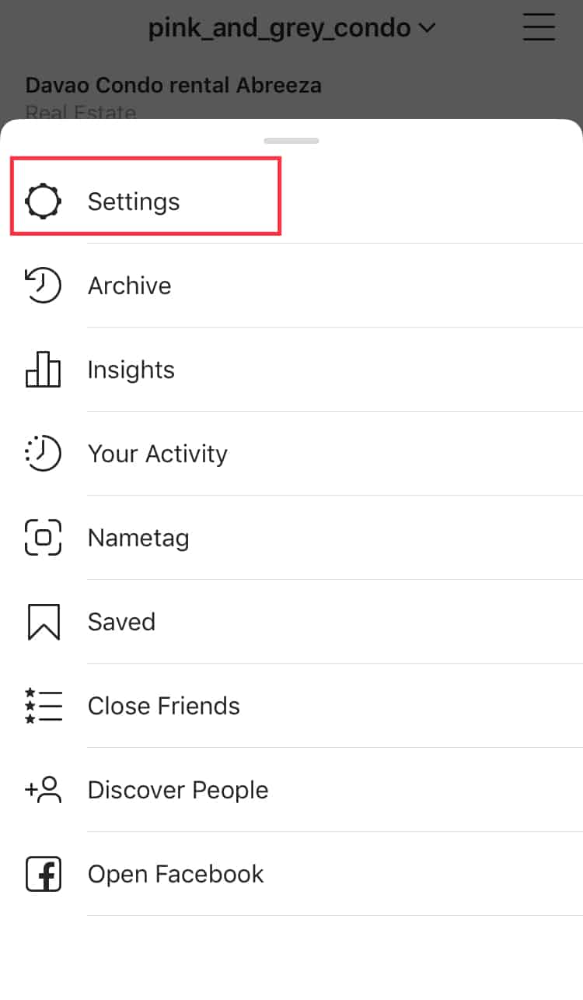
From here, you’ll find the Quick Replies option.
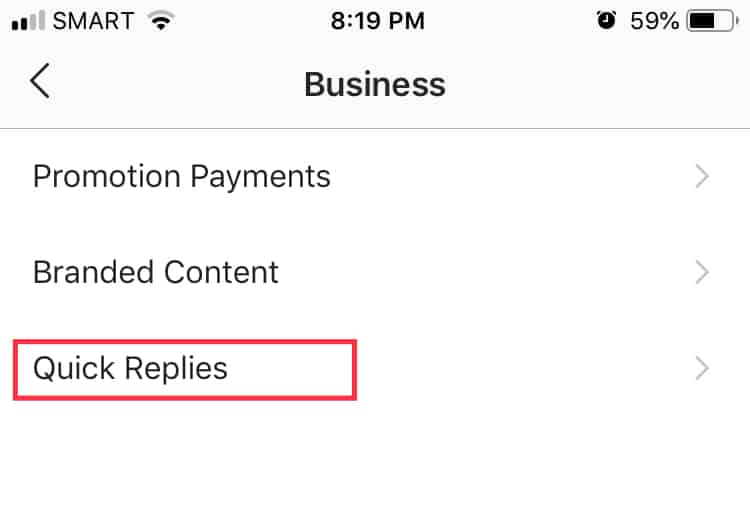
To create a new “quick reply”, simply tap the + icon.
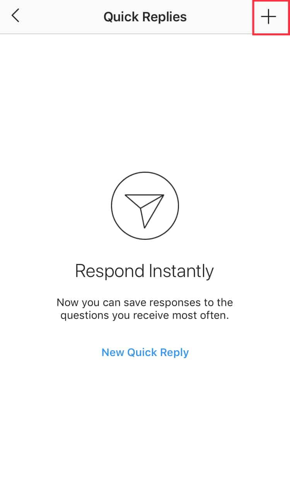
In the new window, you’ll need to fill out the necessary fields.
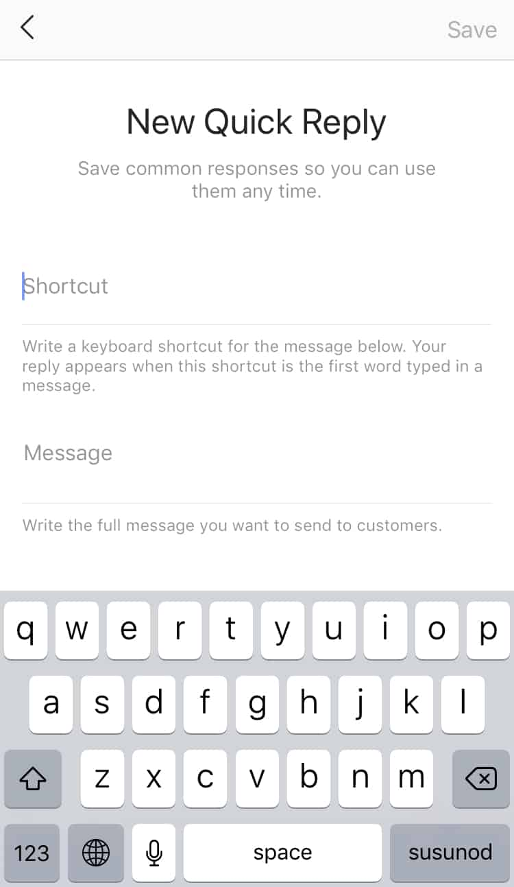
Say, for example, you’re renting out a condo unit. You can create a quick reply to questions like “When is the check-in time?” or “When is the unit available?”
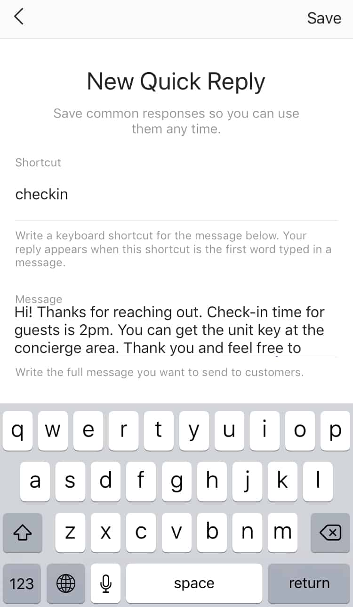
When you’re satisfied, tap Save.
Want to see it in action?
Go to your Instagram Direct Messages and open one.
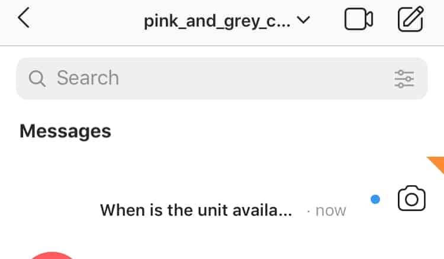
To reply, type the shortcut keyword you created. You’ll see a blue quick reply button at the side.
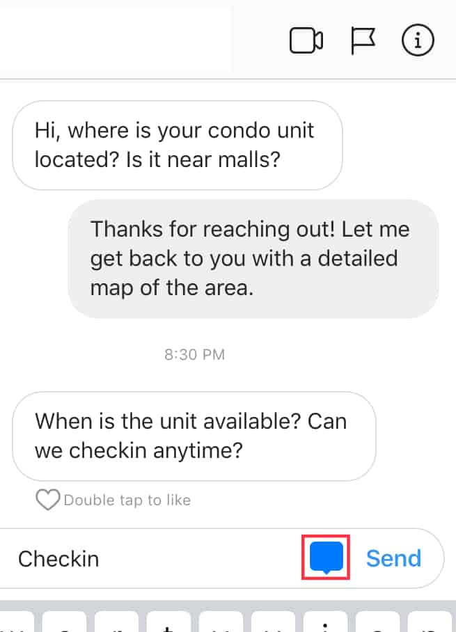
Tap the button to insert the quick reply message. If you’re satisfied with your response, tap Send.
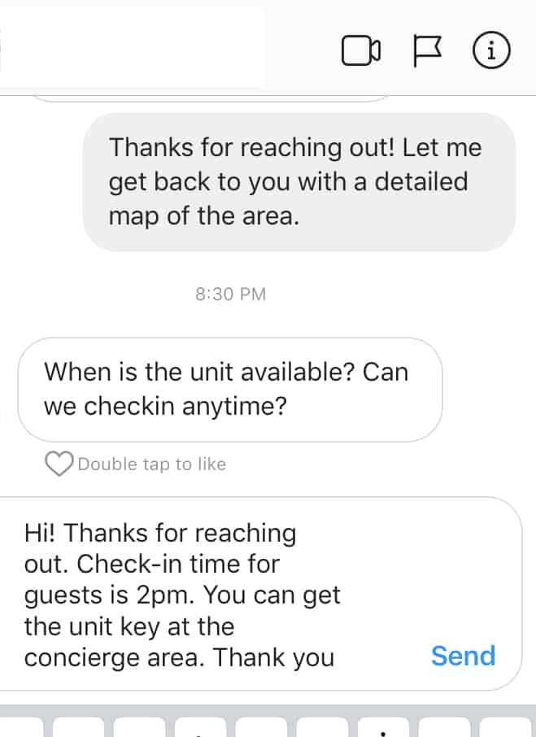
Tip: You can also access all of your Quick Replies by tapping the + icon then the Quick Reply button.
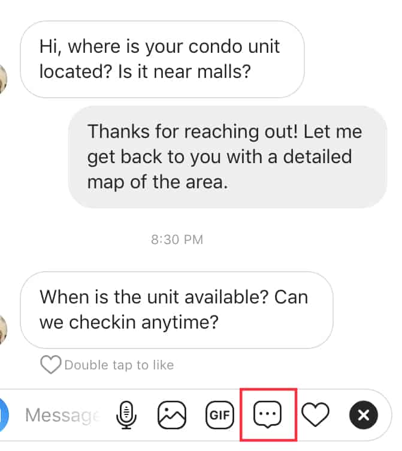
The Quick Reply window will appear.
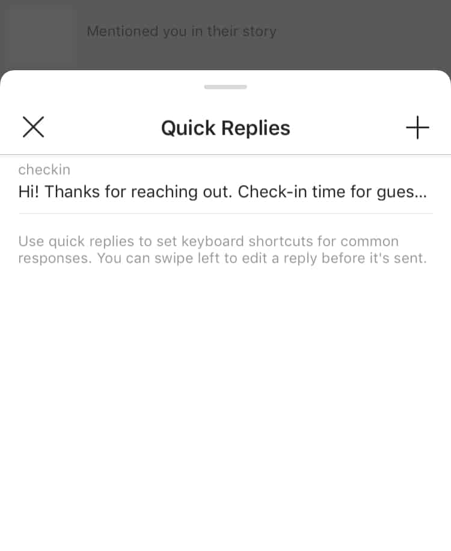
This feature is great for quickly responding to general questions. However, if the conversation needs further dialog, customized messages are the best. Otherwise, your followers might assume that their messages are handled by a bot.
Tip: Aside from Quick Replies, you can also consider recording a FAQ video message. You can post or send them as needed.
Lastly, you can also try making a video response. It’s an excellent idea to stay connected. Plus, your audience will get to see the faces behind your brand.
Pay Attention To Your Comment Section
Instagram messages are not limited to what’s in your inbox. You must not forget the comment section! This is another way to interact with your audience.
In fact, potential customers might leave inquiries in the comment section. Take this example from @kravebeauty‘s comment section.
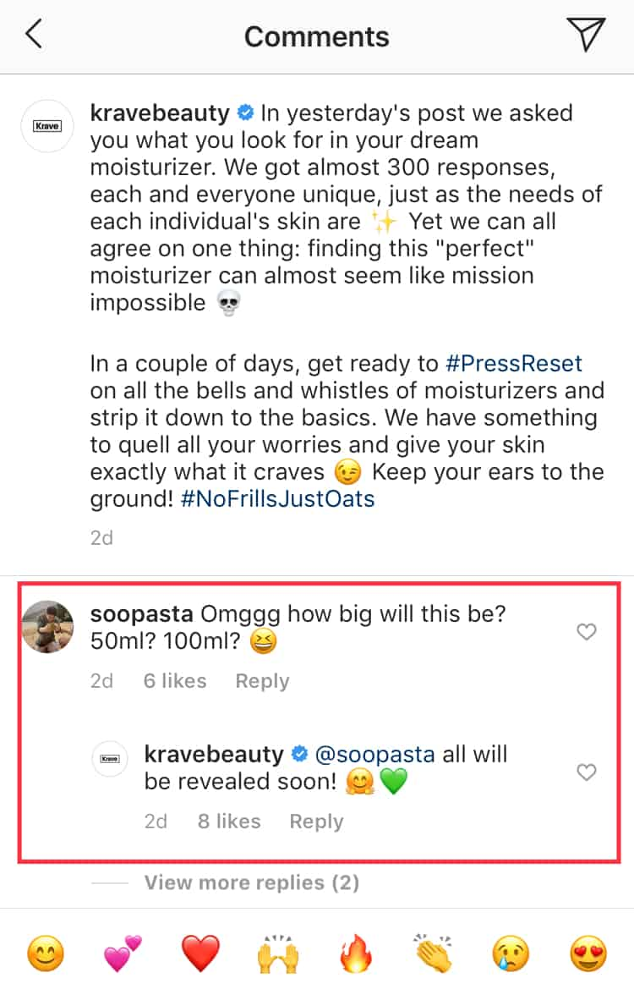
Instead of sending a DM, the user left a comment. It’s great that Krave Beauty takes such inquiries seriously while maintaining the hype for the big reveal.
How To Handle Negative Comments Using Instagram Direct Messages
It’s best to handle negative comments and reviews in a private conversation. In doing so, you’ll lower the risk of damaging your reputation. Additionally, you’ll be able to quickly solve the problem.
Need more reasons to use Instagram direct messages for customer support?
- According to a study, 79% of customers prefer live chat customer support. Immediate response boosts customer experience.
- By moving the conversation to DM, you’ll be able to exchange private information. Say, for example, a customer complains about a non-delivery. In a private message, you can ask for their order number or other details you need to track their order.
- Lastly, if the customer has other complaints, you can provide them with further assistance in a private message. For instance, a customer complained about your product. You can ask the team assigned to the product to provide expert advice for their concerns.
Instagram Direct Message is a wonderful feature for customer service. In fact, you can use it to make your super fans feel special.
How To Make Your Loyal Followers Feel Special With Instagram Messages
Want to give back to your loyal followers? Are you getting requests from fans to know more about what your brand is up to?
Here are a few tips to provide exclusive treats to your superfans:
- Send your loyal fans a sneak peek of your brand’s future plans and ideas
- Create discount codes and share them with selected followers each week.
- Choose a “fan-of-the-week” and send free goodies to show your appreciation.
Your followers will surely appreciate your efforts. If you treat them to exclusive content, they’ll be more engaged and active.
Bonus: Keep Personal And Business Messages Separate with Instagram Threads
Want to keep a separate inbox for your close friends?
Last October 03, 2019, Instagram announced Threads – a camera and messaging app. Threads work with your Instagram close friends list.
Credit: Instagram Press Release for Threads
Remember, in 2018, Instagram introduced Close Friends feature. Today, you can use Threads to message the people on this list and enjoy a dedicated inbox and notification for them.
Think of it as an extension of the Close Friends feature.
Credit: Instagram Press Release for Threads
According to Instagram, Threads focuses on:
- Privacy
- Speed
- Keeping close connections
With this new application, you can share photos, videos, messages, Instagram Stories, and more with your Instagram close friends list.
What else can you do with this standalone app?
- For one, you can send a photo or video.
- Let your friends know what you’re up to through a status message.
Credit: Instagram Press Release For Threads
Take note that conversations in Threads are also available in your Instagram direct messages. This way, you’ll have access to conversations anytime.
Why should you consider getting Instagram Threads?
For one, you don’t have to check your Instagram messages all the time. Threads have a special notification. This helps you stay focus and respond quicker.
Secondly, it helps you keep personal and business messages separate. In doing so, you can keep up with your business Instagram messages.
In Conclusion
If you want to build a good relationship with your followers, take time to converse with them. Stay on top of your Instagram messages!
Whether you’re managing Instagram direct messages by yourself or with a team, make sure to have a solid workflow in place. Be systematic and use the tips we’ve listed above.
Most importantly, be empathic when responding to messages. Let your audience know that they’re conversing with a human and not a robot.